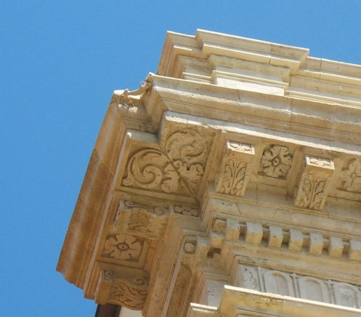

Dietro la ricerca delle Agorà Istituzionali
Il Baricentro della Polis
Questo progetto nasce dalla volontà di mappare la Sicilia attraverso i suoi "centri di gravità". Non sono state scelte piazze casuali, ma focalizzano l'attenzione sulle Agorà Istituzionali: quegli spazi urbani che, da secoli, rappresentano il cuore politico, amministrativo e civile dei nove capoluoghi siciliani.
Ogni piazza presente nel sito è stata analizzata e selezionata seguendo parametri rigorosi, per garantire una coerenza narrativa e scientifica tra le diverse realtà provinciali.
- Funzione amministrativa: la presenza dei palazzi del potere (Municipi, Prefetture, Palazzi di Città) che definiscono la piazza come luogo di governo.
- Centralità storica: il ruolo della piazza nell'evoluzione urbanistica della città, dal periodo greco-romano fino al barocco e alla modernità.
- Valore civico: la capacità dello spazio di raccogliere la comunità nei momenti cruciali della vita pubblica, mantenendo viva l'eredità dell'antica agorà.
- Dimensione e proporzioni: un’analisi delle grandezze superficiale di ogni piazza, per comprendere l’impatto spaziale e la scala del vuoto urbano in relazione alla densità della città.
- L'elemento d'arredo iconico: l’individuazione di un elemento d’arredamento specifico (una fontana monumentale, un sedile lapideo, un lampione storico o un monumento centrale) che funge da fulcro visivo e simbolo dell'identità di quella singola agorà.

Piazze non incluse
Sono state volutamente escluse tutte le piazze, pur celebri o di grande valore estetico, che non rispondono ai requisiti di Agorà Istituzionale. Spazi nati con vocazione puramente religiosa, commerciale o ricreativa non sono stati inclusi in questa analisi, al fine di preservare il focus sul ruolo civile e amministrativo che definisce il vero baricentro politico dei nove capoluoghi siciliani.